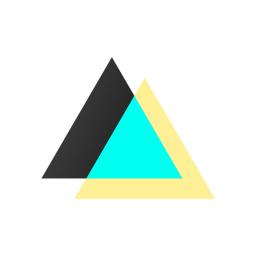
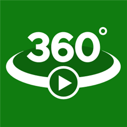

Round Icons
Graphic Design
Приложения за клипове и видеообработка
Открий кинематографa в себе си! Сигурни сме, че мислиш снимането и обработката на видео за тежка задача, но в тази категория ще те убедим, че това не е така. За да ти го докажем сме подбрали най-добрите видео приложения за твоя смартфон, защото един кадър никога не е достатъчен.CloudPlayer (Android)
От doubleTwist
CloudPlayer е революционен музикален плейър, който ви дава пълен контрол върху вашата музика, без значение къде се съхранява. Може да използвате приложението като традиционен музикален плейър или да го свържете с вашия Dropbox, OneDrive и Google Drive профил, за да имате гигантски джубокс с музиката ви в облака. Стриймвайте или изтегляйте песни от облака за офлайн възпроизвеждане. Насладете се и на вградената AirPlay и Chromecast поддръжка. Звукът също е висококачествен.
Цена: Безплатно (Предлага покупки в приложението)
Изтегли приложението от Google Play Store
Харесай Добави в любими
Adobe Premiere Clip (iOS)
От Adobe
Premiere Clip прави бързо и забавно редактирането и обединяването на отделни клипове в дълги видео проекти с високо качество. Те могат лесно да бъдат споделяни или отваряни в Premiere Pro CC за допълнителна обработка. Имате пълния набор от функции и силата зад Premiere Pro. Premiere Clip е приложение, което наистина трябва да имате, ако използвате iPhone или IPAD за основни устройства за снимане и обработка.
Цена: Безплатно
Изтегли приложението от App Store
Харесай Добави в любими
SloPro (Android, iOS, Windows)
От Sand Mountain Studios, LLC
Снимайте видео с високи скорости и след това го възпроизведете в бааааавно движение. Със SloPro ще снимате, редактирате и споделяте видеоклипове на забавен каданс, без да се налага да прехвърляте файлове. Качете бавните си видеоклипове във Facebook и YouTube безплатно. Очаквайте скоро поддръжка на режими от 500 FPS и 1000 FPS.
Цена: Безплатно (Предлага покупки в приложението)
Изтегли приложението от Windows Store, Google Play Store, App Store
Харесай Добави в любими

Fused : Double Exposure, Video and Photo Blender (iOS, Windows)
От EasyTigerApps
Правете двойна експозиция лесно с FUSED - първото приложение за Windows Phone, което ви позволява да сливате видео, снимки или да правите комбинация от двете. С FUSED можете да създадете красиви визуализации. Създайте своите FUSED творения в 4 лесни стъпки:
- Импортирайте фон и преден план.
- Прелистете за визуализация и изберете най-добрия режим на смесване на вашия проект.
- Направете настройка на цветовете на всеки слой и маскирайте, ако искате.
- Експортирайте получения резултат, като го споделите с всички в социалните мрежи.
Цена: Безплатно (Предлага покупки в приложението)
Изтегли приложението от >Windows Store, App Store
Харесай Добави в любими
Gif Me Camera! Pro (Android, Windows)
От XnView Apps
GIF Me! е най-добрият начин да създавате и споделяте кратки видео анимирани GIF-ове или MP4 филмчета. Лесно е: просто заснемете нещо с вградената камера, и го споделете в социалните мрежи. Можете да прилагате и филтри към изображенията.
Цена: 3,49 лв
Изтегли приложението от Google Play Store, Windows Store - 1.89 лв
Харесай Добави в любими
Cameo - Video Editor and Movie Maker (iOS)
От Vimeo, LLC
Cameo ви позволява лесно да редактирате и споделяте кинематографично видео от телефона си. Вземете клип от вашата галерия, отрежете го и го съберете отново по нов начин, добавяйки блясък и саундтрак. Изтеглете безплатното приложение сега и отприщете творческите си пориви.
Цена: Безплатно (Предлага покупки в приложението)
Изтегли приложението от App Store
Харесай Добави в любими
Stayfilm (Android, iOS, Windows)
От Stayfilm Serviços Online
Stayfilm е онлайн филмово студио, с което ще превърнете своите снимки и видео в супер интересни истории с музикален фон, визуални ефекти и кинематографично качество. Не е нужно да променяте нищо. Всичко се случва автоматично и може да споделите съдържанието в социалните мрежи.
Цена: Безплатно (Предлага покупки в приложението)
Изтегли приложението от Google Play Store, App Store, Windows Store
Харесай Добави в любими
TodoMovies 4 (iOS)
От Taphive
TodoMovies 4 е най-добрият начин за управление на филмите, които искате да гледате. Създавайте потребителски списъци и откривайте нови филми. С прекрасните филмови плакати, които запълват цялата площ на екрана ви, и уникални функции като бонус сцени, профили на актьорите, уведомления за премиери и много повече. TodoMovies 4 е филмовото приложение за всеки филмов ентусиаст. Premium планът дава достъп до разнообразни тренировъчни програми.
Цена: Безплатно (Предлага покупки в приложението)
Изтегли приложението от App Store
Харесай Добави в любими

Video 360 (Windows)
От Webrox
Video 360 е първият 360-градусов плейър в Windows Store. Опитайте това невероятно преживяване да контролирате камерата, завъртайки видеото в която посока си поискате. Свържете плейъра с Tubecast, за да се насладите на 360-градусовите видеоклипове в YouTube (с 4K поддръжка).
Цена: 3,79 лв.
Изтегли приложението от Windows Store
Харесай Добави в любими
Videoshop - Video Editor (iOS, Windows)
От Paca LLC / Joseph RiquelmeB
Videoshop е видео редактор с инструменти за бързо редактиране, филтри и много други ефекти за персонализиране на вашите видеоклипове. Характеристики:
- Изрязване: Изрежете всички нежелани моменти.
- Музика: Добавете от музикалната ви библиотека или от библиотеката на Videoshop.
- Звукови ефекти: Изберете от животни, шумове, експлозии, смях и т.н.
- Забавено движение (или забързано движение): Регулирайте скоростта на видеото. (ОЧАКВАЙТЕ СКОРО)
- Регулиране на екрана: Сменяйте яркостта, контраста, наситеността и т.н.
- Сливания: Съединете няколко клипчета в едно.
- Текст: Въведете собствен текст с цвят и различни шрифтове.
- Гласови поглъщания: Запишете собствения си глас във видеото.
- Анимационни заглавия: Въведете във видеоклиповете си с анимирани заглавия. (ОЧАКВАЙТЕ СКОРО)
- Филтри: Изберете от няколко вдъхновени от Instagram филтри за подобряване на вашите видеоклипове. (ОЧАКВАЙТЕ СКОРО)
- Споделяйте във Vine, Snapchat, Instagram, Facebook, YouTube, Vimeo или чрез електронна поща. (ОЧАКВАЙТЕ СКОРО)
- … + още много допълнителни екстри
Цена: Безплатно (Предлага покупки в приложението)
Изтегли приложението от App Store, Windows Store
Харесай Добави в любими
Movie HD Unlimited (Windows)
От HardRockApp
С Movie HD Unlimited можете да гледате над 10 000 филма в HD безплатно. Movie HD Unlimited е абсолютно легално приложение и съдържа само линкове към други сайтове в интернет: dailymotion.com, filefactory.com, myspace.com, mediafire.com, sevenload.com, zshare.net, stage6.com, tudou.com, crunchyroll.com, veoh.com, peteava.ro, 2shared.com, 4shared.com, uploaded.net, youku.com, youtube.com и много други... Това приложение не хоства никакви видеоклипове, филми, мултимедийни файлове (avi, mov, flv, mpg, mpeg, divx, dvd rip, mp3, mp4, torrent, ipod, psp). Movie HD Unlimited не носи отговорност за достоверността, съответствието, авторските права, законността, благопристойността или всеки друг аспект на съдържание на другите свързани сайтове.
Цена: Безплатно (Предлага покупки в приложението)
Изтегли приложението от Windows Store
Харесай Добави в любими
Hyperlapse Mobile (Windows)
От Microsoft Corporation
Кажете сбогом на дългите видеоклипове и здравей на Microsoft Hyperlapse. Microsoft Hyperlapse е нова технология, която създава гладки и стабилизирани timelapse видеоклипове. Искате ли да покажете на приятелите си какво видяхте в онзи 12-километров поход миналия уикенд? С Microsoft Hyperlapse Mobile можете да запишете вашето преживяване и да го съберете в кратко видео, колкото и да е дълго то. Потребителите могат да:
- Изберат скоростта на Timelapse видеото
- Внасят съществуващи видеоклипове
Цена: Безплатно
Изтегли приложението от Windows Store
Харесай Добави в любими
Shoot'IN - Amazing Videos (iOS)
От Yohann Hagnere
Shoot'IN е вашата лична филмова машина! Shoot'In ви позволява да правите клипове по различни начини, незабавно и без редактиране. Изберете макро режим за снимане отблизо или запишете с комиксов филтър в реално време, за да получите усещане, че създавате анимационен филм. Уловете момента в ускорен режим или на забавен кадър... Споделете клиповете директно с вашите приятели. Лесно е.
Цена: Безплатно (Предлага покупки в приложението)
Изтегли приложението от App Store
Харесай Добави в любими
Movie Maker 8.1 (Windows)
От HardRockApp
Както подсказва името, Movie Maker е един от най-добрите софтуери за видео монтаж в Windows Phone. Изключително разнообразни опции за рязане и сглобяване на видео, аудио и снимков материал, във всякакви формати, включително и в 4K UHD резолюция. Има и инструмент за обработка и запис на аудио към клиповете. Споделяйте към Instagram, Facebook, YouTube и други места директно от приложението.
$1.49 +
Изтегли приложението от Windows Store
Харесай Добави в любими
Hyperlapse from Instagram (IOS)
By Instagram, Inc.
Hyperlapse е разработка на Instagram, като целта на приложението е да създавате красиви timelapse видеа, които да изглеждат като снимани професионално. На практика може да се използва и просто като приложение за снимане на добре стабилизирани видеа с нормална скорост, дори при хора с по-треперещи ръце. Забързването на клиповете ви може да е от 1 до 12 пъти.
Цена: Безплатно (Предлага покупки в приложението)
Изтегли приложението от App Store
Харесай Добави в любими
Vimeo
От Vimeo Mobile
Очакваните функции за качване, споделяне и описание на видеата присъстват в приложенията на Vimeo. Ценното на тази услуга обаче е качеството на клиповете вътре. Тук можете да гледате разнообразни видеа на хора от цял свят, които са повече изкуство, отколкото забавление на YouTube. Един безценен източник на вдъхновение.
Цена: Безплатно
Изтегли приложението от Google Play Store, App Store, Windows Store
Харесай Добави в любими
MoviePro
By Deepak Sharma
Изключително мощно приложение за снимане на видео, в което имате контрол над буквално всеки детайл. От фокуса, експозицията и белия баланс, през нивата на звука, продължителността и ориентацията, до битрейта, кадрите в секунда и компресацията на звука. Можете да изберете и резолюцията на видеото, както и аспектното съотношение.
$4.99 -> $0.99 for very limited time
Изтегли приложението от App Store
Харесай Добави в любими
- Последно обновени: Февруари 2016
- Категория: Приложения за клипове и видеообработка